LIBERO-Recover
Beyond Task Success — Towards Failure Recovery in Robotic Manipulation Models
from real failures
4 LIBERO suites
L1 → L4
dimensions
4 teleoperators
third-person + wrist
From “Can the robot succeed?” to “Can it recover after failure?”
Vision-Language-Action (VLA) and World Action models have recently demonstrated remarkable performance in robotic manipulation. On LIBERO, state-of-the-art methods have achieved nearly 100% success rates, seemingly suggesting that the models are ready for deployment in the real world. However, near-perfect performance on existing benchmarks can be misleading: success under ideal conditions does not imply real-world robustness. Existing benchmarks primarily evaluate task completion from predefined initial states, while real-world interactions inevitably involve failures such as failed grasps, collisions, and unintended object movements. A robot must therefore not only execute tasks successfully, but also recognize and recover from failures to continue the task. Yet this capability remains largely unmeasured, revealing a critical gap between benchmark performance and real-world reliability. To address this gap, we introduce LIBERO-Recover, a large-scale benchmark for failure recovery in robotic manipulation. Built upon LIBERO, we collect real execution failures from SOTA embodied models and construct 2,000+ scenarios across four recovery levels: (1) Action Retry, (2) Action Adaptation, (3) Object State Recovery, and (4) Environmental Recovery. We evaluate four core capabilities: spatial understanding, object structure reasoning, interaction understanding, and topological reasoning. As the first large-scale benchmark for embodied failure recovery, LIBERO-Recover shifts evaluation from “Can the robot succeed?” to “Can the robot recover after failure?”, promoting robust and generalizable embodied agents.
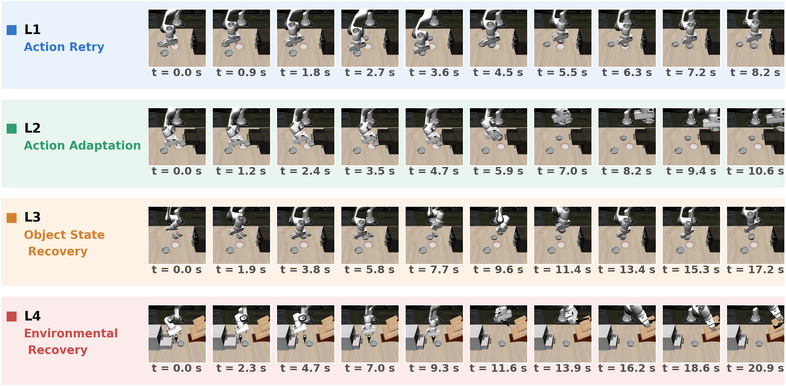
Four recovery levels, one selector
Failures are organized into four progressive levels by the amount of state reasoning required to resume execution — from action repetition, to action adaptation, to task-relevant object recovery, and finally environment recovery. Pick a level to watch its full demonstration.
Failure, or just a state variation?
Not every state change during execution constitutes a failure. A state sf is a failure state when the preceding action induces a task-relevant change that invalidates the current execution plan — and it must nevertheless remain recoverable:
State changes that preserve task executability are treated as normal variations; execution-induced changes that invalidate the plan and require recovery are treated as failures.
Recovery scenario construction pipeline
Each scenario is defined as (𝓘, s₀, τfail, sf, g, r) — instruction, initial state, failure trajectory, failure state, goal, and required recovery behavior. No objects, environment states, or initial configurations are manually perturbed, and no failures are injected.
Task execution
Start from four LIBERO task suites covering 130 subtasks, preserving original instructions and initial configurations. SOTA embodied policies are deployed purely as failure generators — executed to expose diverse failure trajectories, not as benchmark baselines. Each execution produces a complete failure trajectory, rendered to video.
Failure localization
A VLM analyzes each execution video together with the task instruction to temporally localize where the execution deviates from the intended progression. The video is decomposed into pre-failure / failure / post-failure stages; from the predicted boundaries, the simulator yields the localized transition (st, at, sf) — identifying the failure-causing interaction itself, not just the final state.
Failure characterization
Each candidate failure is characterized along object poses & identities, object states, robot and gripper states, interaction relations, task progress, and environmental states. The VLM then assigns the required recovery type and difficulty level (L1–L4), producing a recoverable failure scenario with preserved instruction and temporal context.
2,178 scenarios, distributed as models actually fail
The four recovery levels exhibit an inherently imbalanced distribution — higher-difficulty failures occur less frequently. This distribution emerges naturally from real model executions and is preserved without manual rebalancing. Notably, the proportion of post-task-failure cases grows with difficulty: models lacking recovery capability repeatedly retry failed actions, often with progressively more severe consequences.
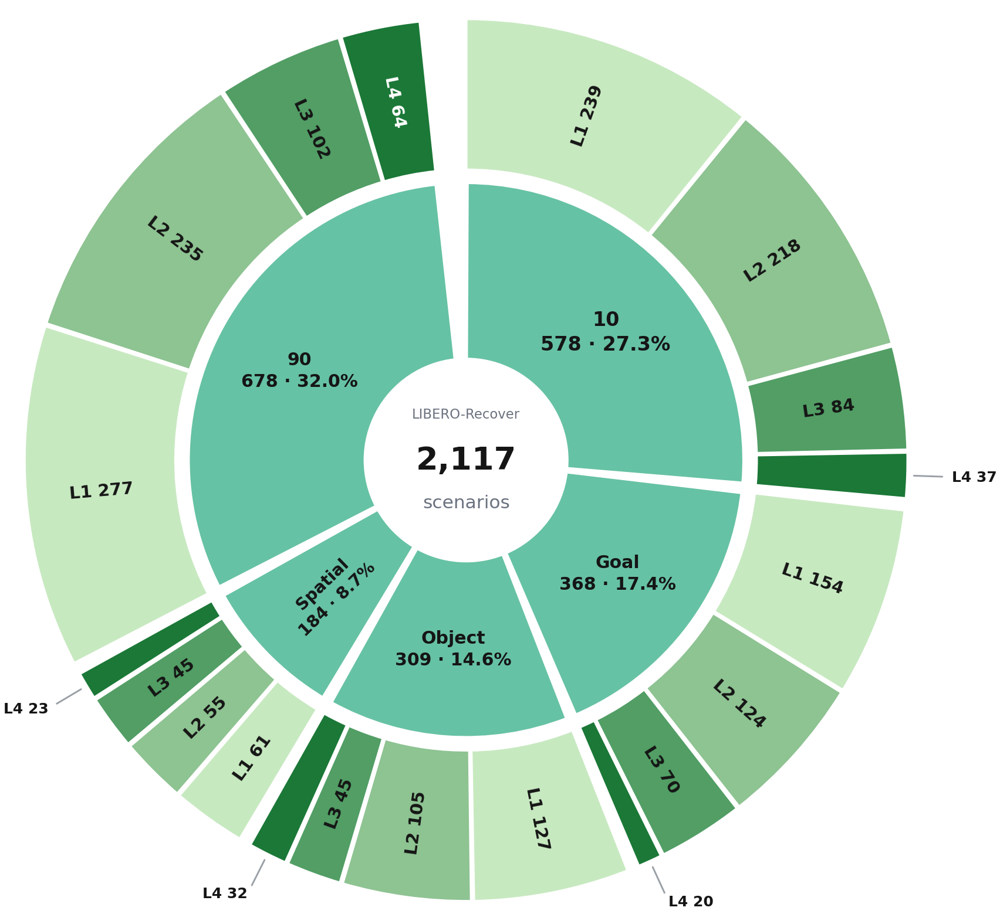
3,184 human recovery demonstrations
To improve models' failure-recovery capability, four human teleoperators collected recovery trajectories with a SpaceMouse across 413 failure scenarios, uniformly sampled from the five evaluation suites to match the benchmark distribution. The resulting LeRobot-format dataset provides third-person and wrist-camera videos with joint states and end-effector actions at 20 Hz.
third-person + wrist
Spatial-relation instructions: which one of several identical objects to manipulate, identified by position.
- Pick the black bowl between the plate and the ramekin, place it on the plate
- Pick the black bowl in the top layer of the wooden cabinet
- Pick the black bowl on the cookies box, place it on the plate
Object-identity instructions: everyday grocery objects to pick and stow.
- Pick up the ketchup and put it in the basket
- Pick the alphabet soup and place it in the basket
- Pick the butter and place it in the basket
Goal-conditioned manipulation: drawer, cabinet and appliance sequences.
- Open the top drawer of the cabinet and put the bowl in it
- Open the middle layer of the drawer
- Put both the alphabet soup and the tomato sauce in the basket
Long-horizon everyday tasks mixing all of the above skills.
- Put the black bowl in the top drawer of the cabinet
- Put the moka pot on the stove
- Turn on the stove and put the frying pan on it
Hover (or tap) a card to flip it · hover a video to play
Show all 78 task types in the recovery dataset →
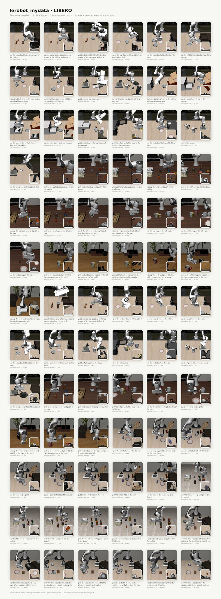
Three metrics, computed from execution only
Failure recovery is evaluated in terms of task completion, performance degradation, and recovery efficiency, using only execution trajectories and task-success labels.
Whether the policy completes the original task after entering a failure state. Reported overall and per level (RSRL1 … RSRL4) to characterize the effect of recovery difficulty.
How strongly a failure affects execution capability, measured across three temporal phases — pre-failure, during-failure, post-failure. Distinguishes models with similar final success but different degradation.
Stability of recovery across failure states within the same task, from the standard deviation of task-level recovery success rates. Higher RC indicates more consistent recovery behavior.
Eight findings on failure recovery
We evaluate six representative models — OpenVLA-OFT, π₀-FAST, GR00T-N1.5, π₀, Wan2-Policy, and Cosmos-Predict2-Policy — using official configurations; each task runs 10 trials with slight object-position perturbations and a 1.1× human-completion-time budget.
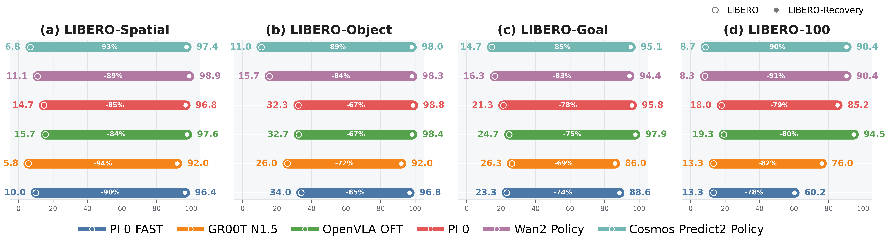
Success under ideal conditions does not imply robustness. Bars compare each policy's success on predefined scenarios against recovery success from real failure states, across the four suites.
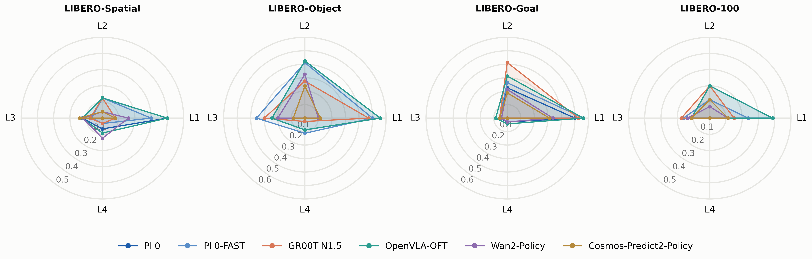
Local correction is easy, state recovery is hard. Recovery success broken down per task suite and per recovery level L1–L4 for all six evaluated policies.
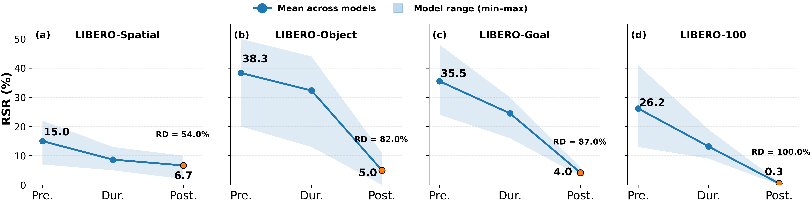
Failure is a compounding distribution shift. Success across the three temporal phases (pre-failure / during-failure / post-failure) for each suite, averaged over models and per model.
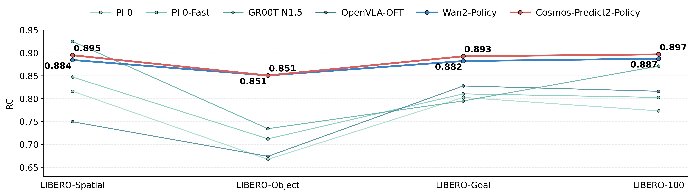
World-action policies recover more consistently. RC per suite and overall. WAM policies (right) exhibit more stable recovery than conventional VLA policies (left).
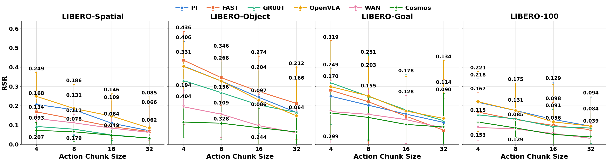
Smaller chunks, better recovery. Recovery success versus chunk size (4 → 32) for the four suites; finer action granularity yields more frequent state feedback.
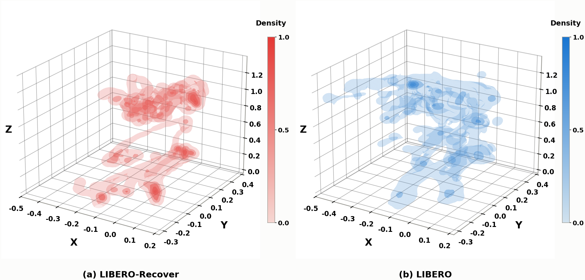
Recovery concentrates near critical states. LIBERO-Recover (right) concentrates around grasping, placing and interaction states; standard LIBERO demonstrations (left) spread over a wider workspace.
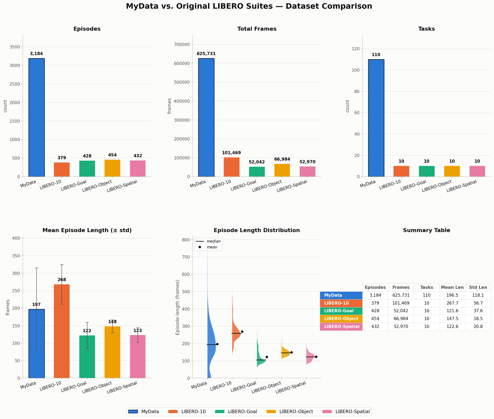
Paired recovery data at benchmark scale. Episodes vs frames among representative robot-manipulation datasets; bubble size encodes the number of tasks. LIBERO-Recover contributes 3,184 episodes / 625,731 frames / 110 task types of human recovery demonstrations.
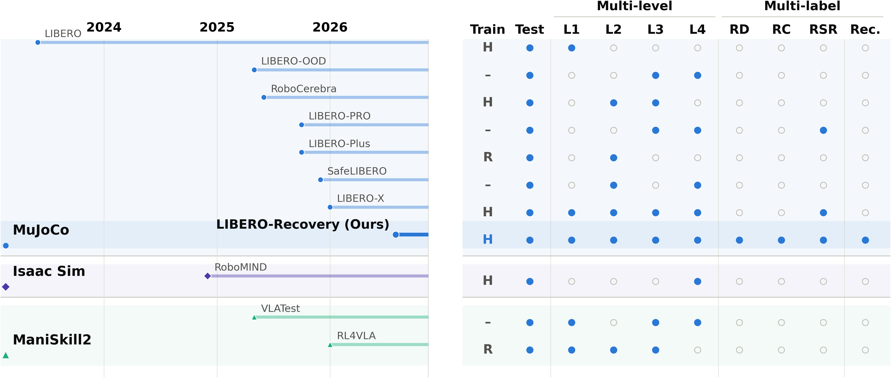
First benchmark dedicated to execution-born failures. From LIBERO, SimplerEnv, RoboCasa, and RoboTwin to LIBERO-Plus / -Pro / -X / -Safety, prior work evaluates task completion under manually predefined distribution shifts; LIBERO-Recover targets failures that arise naturally during execution.
Success in predefined scenarios does not guarantee robustness to real failures
All models suffer over 50% performance drops when exposed to naturally occurring failures. Rankings on standard benchmarks do not transfer: Wan2-Policy outperforms GR00T-N1.5 by +14.40% on LIBERO-100, yet falls −5.0% behind it under corresponding failures; π₀ and π₀-FAST show similar reversals on LIBERO-Spatial. Standard benchmark rankings are poor predictors of recovery capability.
Models excel at local correction but struggle with state recovery
All models achieve substantially higher success on L1/L2 than on L3/L4, decreasing monotonically with difficulty. L1/L2 can often be solved by adapting the next action from visual observations, whereas L3/L4 require structured reasoning about object states, spatial relations, interaction dependencies, and scene memory. The gap between L2 and L3 marks the unresolved transition from action-level correction to state-level recovery.
Failures induce compounding distribution shifts
Averaged across models, success drops 15.0% → 6.7% on LIBERO-Spatial, 35.5% → 4.0% on LIBERO-Goal, 38.3% → 5.0% on LIBERO-Object, and 26.2% → 0.3% on LIBERO-100 — recovery degradation rates of 51.7%, 87.3%, 88.7%, and 97.7%. Performance keeps decreasing from the failure stage to the post-failure stage: repeated unsuccessful interactions drive execution into increasingly unfamiliar states.
World-action policies recover more consistently than VLAs
WAM policies reach higher Recovery Consistency — Cosmos-Predict2-Policy 0.884 and Wan2-Policy 0.870, versus 0.749–0.798 for conventional VLAs. A possible explanation: VLAs primarily imitate actions from successful trajectories, while world-model-based policies explicitly model action-conditioned state transitions, providing a stronger inductive bias for adapting to unexpected failure states.
Smaller action chunks improve recovery
Across all four subsets, recovery success consistently degrades as the action chunk size grows from 4 to 32, with the largest drops at bigger chunks — shared across policies. Longer chunks commit the robot to a sequence before the next policy update, making it harder to correct failure-induced deviations. Effective recovery requires not only a capable policy but also fine-grained closed-loop control.
Recovery concentrates in a narrower state distribution
KDE analysis over end-effector action densities shows LIBERO-Recover exhibits a more concentrated state distribution with several distinct high-density regions, while the original LIBERO data covers a more dispersed workspace. Failures concentrate around a limited number of critical states — grasping, placing, object interaction — so recovery data supplies concentrated supervision around the critical state-transition regions that are underrepresented in standard demonstrations.
Recovery training does not transfer to standard execution
Jointly training on LIBERO + LIBERO-Recover consistently improves recovery success (GR00T-N1.5 17.8% → 21.2%; OpenVLA-OFT 20.8% → 25.4%) but yields little or even negative change on standard LIBERO (86.5% → 87.2%; 97.1% → 96.6%). Exposing a policy to failure states is not sufficient to make it recover from its own execution errors — effective recovery may also require recognizing failures as they emerge online.
Success rate with and without recovery data (Combined).
| Method | Condition | Spatial | Object | Goal | 100 |
|---|---|---|---|---|---|
| Standard LIBERO | |||||
| GR00T-N1.5 | base | 0.920 | 0.920 | 0.860 | 0.760 |
| GR00T-N1.5 | + Combined | 0.931 | 0.905 | 0.882 | 0.770 |
| OpenVLA-OFT | base | 0.976 | 0.984 | 0.979 | 0.945 |
| OpenVLA-OFT | + Combined | 0.982 | 0.994 | 0.970 | 0.916 |
| LIBERO-Recover | |||||
| GR00T-N1.5 | base | 0.057 | 0.260 | 0.263 | 0.133 |
| GR00T-N1.5 | + Combined | 0.116 | 0.262 | 0.264 | 0.206 |
| OpenVLA-OFT | base | 0.156 | 0.326 | 0.246 | 0.103 |
| OpenVLA-OFT | + Combined | 0.178 | 0.333 | 0.270 | 0.236 |
Temporal context improves failure recovery
Providing the task's initial frame as temporal context consistently improves recovery, most strongly in harder settings: OpenVLA-OFT improves from 20.8% to 26.8% on average — including 10.3% → 24.7% on LIBERO-100 and 24.6% → 30.0% on LIBERO-Goal; GR00T-N1.5 improves 17.8% → 18.9%. The initial frame anchors a comparison between current and intended scene, letting the policy infer what the failure disrupted.
Recovery success with and without temporal context.
| Method | Condition | Spatial | Object | Goal | 100 |
|---|---|---|---|---|---|
| GR00T-N1.5 | base | 0.057 | 0.260 | 0.263 | 0.133 |
| GR00T-N1.5 | + temporal | 0.066 | 0.260 | 0.264 | 0.166 |
| OpenVLA-OFT | base | 0.156 | 0.326 | 0.246 | 0.103 |
| OpenVLA-OFT | + temporal | 0.193 | 0.333 | 0.300 | 0.247 |
Cite this work
@inproceedings{liberorecover2027,
title = {LIBERO-Recover: Beyond Task Success Towards Failure
Recovery in Robotic Manipulation Models},
author = {Anonymous},
booktitle = {None},
year = {2027},
note = {Under double-blind review}
}